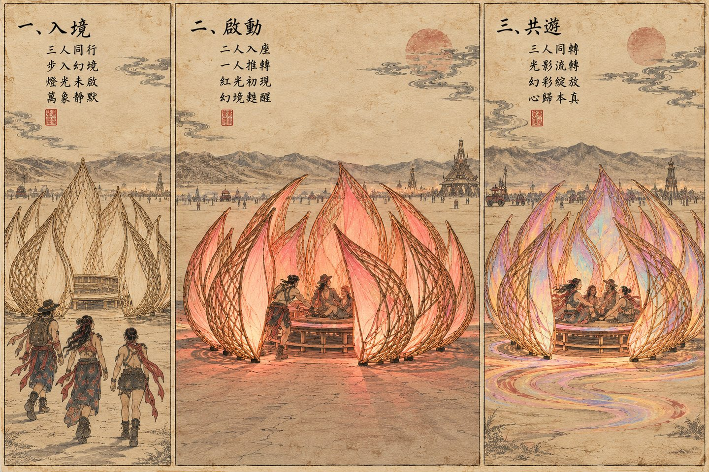

2027 art project · In development
BlossomArt Installation
An invitation to play.
A flower brought to life by the people within it.
Proposed for Black Rock City 2027 · Concept design underway

The idea
One stranger sits.
Another gives a push.
Together, they become part of the artwork.
Blossom is a proposed nine-foot sculpture with the glow of a lantern. Eleven stationary petals surround a separate, low carousel powered by the people who gather inside. A gentle push sets the carousel in motion as fire-like colors bloom within the petals.
From the entrance, a lotus. From the side, a flame-like silhouette. From above, an eye. From within, a frame for the open desert sky.
The experience
Arrive with curiosity.
Leave with a shared moment.

- 01 / Enter
A quiet invitation
Step between the petals and discover the carousel at the center.
- 02 / Set in motion
A little cooperation
One person sits while another pushes. The petals stay still; the carousel turns independently.
- 03 / Play together
A shared sense of wonder
Join the ride, watch the light, or look up through the petals into the sky.
The meaning
In the face of wonder,
play.
We don’t need to hold onto a moment to be changed by it.
Inspired by the lotus and Buddhist ideas of purity and transformation, Blossom brings Chinese cultural references into a shared, participatory experience. Bamboo weaving and the craft of Zigong lanterns shape a meeting of tradition, light, and play.
There is room for stillness, too. Beneath the petals, the vast sky invites visitors to feel beautifully small and deeply alive. The hope is simple: to open ourselves to wonder, and to one another.
The design in progress
Woven structure.
Lantern light.

- Petals
- 11 stationary petals
- Planned height
- Approximately 9 feet
- Carousel
- Approximately 6 feet across, human-powered
- Footprint
- No greater than 20 × 20 feet
- Proposed materials
- Bamboo exoskeleton, metal supports, translucent Zigong lantern interiors
- Current stage
- Petal modeling and fabrication exploration
These are proposed dimensions and materials. The structure, fabrication, and participant experience are being refined. Illustrations and 3D studies show the concept, rather than a completed installation.
Help Blossom take shape
Make room
for a little wonder.
We’re bringing artists, makers, and engineers together to develop the project. Get in touch to explore building or collaborating with us.